wheel to zoom · drag to pan · esc to close
×
168 hexagonal spiral coils on a 14-layer, 106 mm board, one H-bridge per coil, under a 44.45 mm Halbach platen built entirely from catalogue 1/4″ N52 bricks. This page documents the best-routed board the pipeline has produced, and is honest about how much of it is routed.
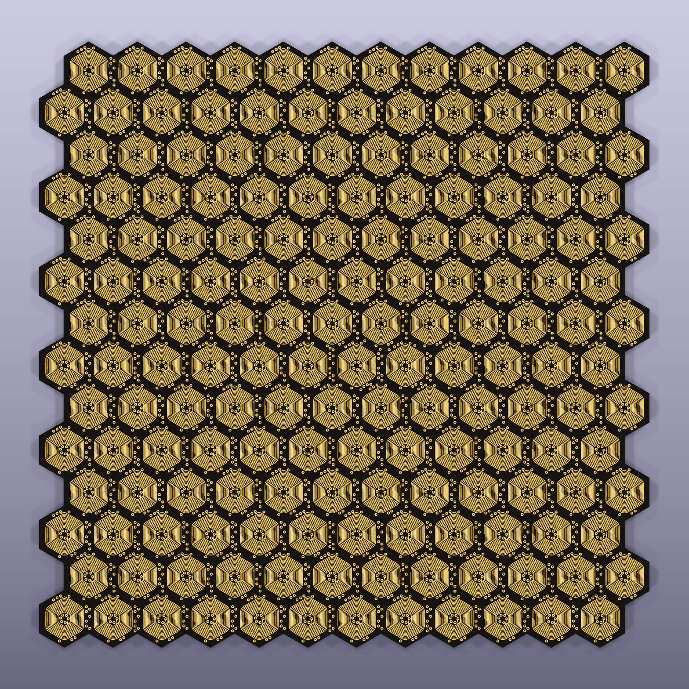
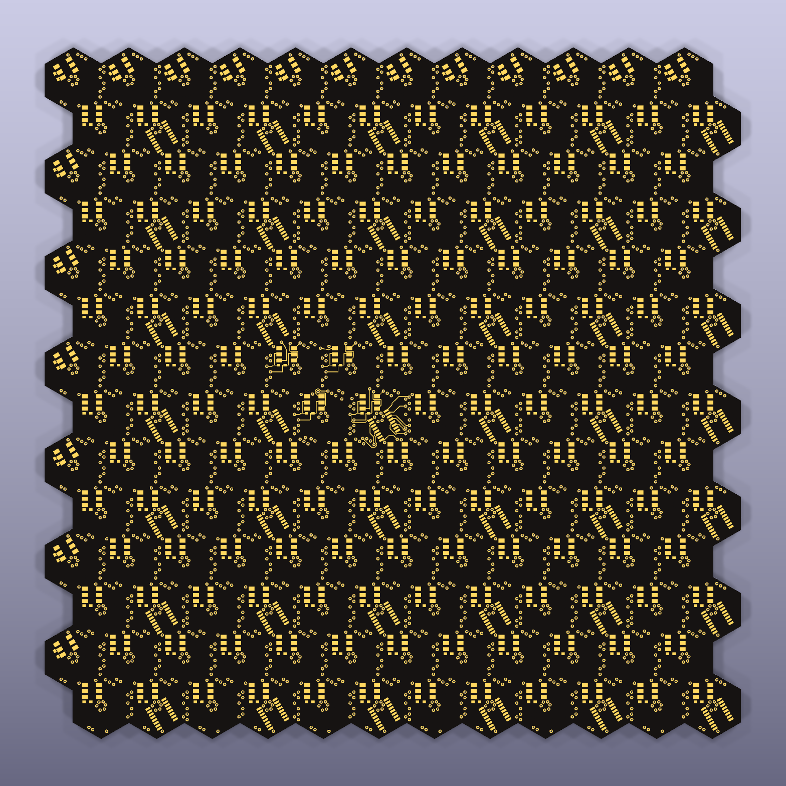
Fourteen copper layers: twelve of winding plus two surrendered to the electronics. Both halves of that sentence are load-bearing.
The electronics layers have to come in a pair, because a spiral alternates which end it finishes on — with an odd winding count the last layer ends in the centre hole, and the tab carrying that lead out crosses every turn of its own layer. That is a dead short of the whole layer, on all 168 coils, and no design-rule check can see it: the tab and the winding are the same net. And they have to be added rather than taken out of twelve, because two fewer winding layers costs a fifth of the turns (120 instead of 144) and buys no routing improvement at all — measured on a 3×3 tile, 12+2 and 14+2 plateau within two connections of each other.
The price is a 14-layer stack, which is past the layer count where PCB pricing turns steep, and a wider drill: 1.84 mm of board through a 0.2 mm hole is a 9:1 plated hole and the fab does 8:1, so every via opens to 0.23 mm and the annular ring comes down to 0.135 mm — still over the 0.13 mm floor.
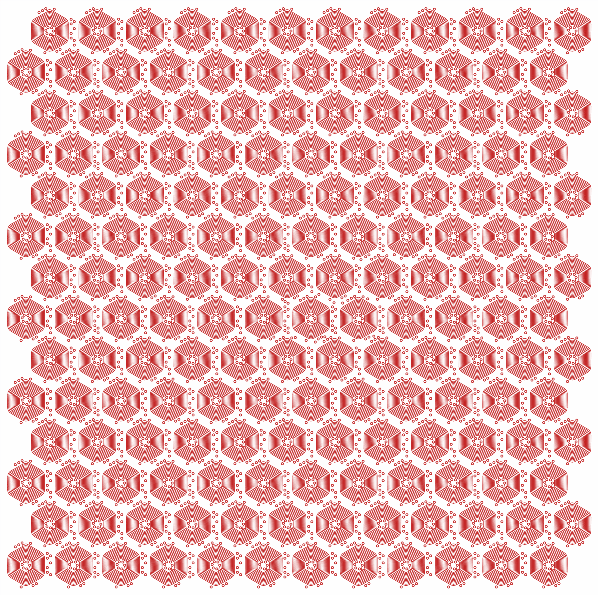
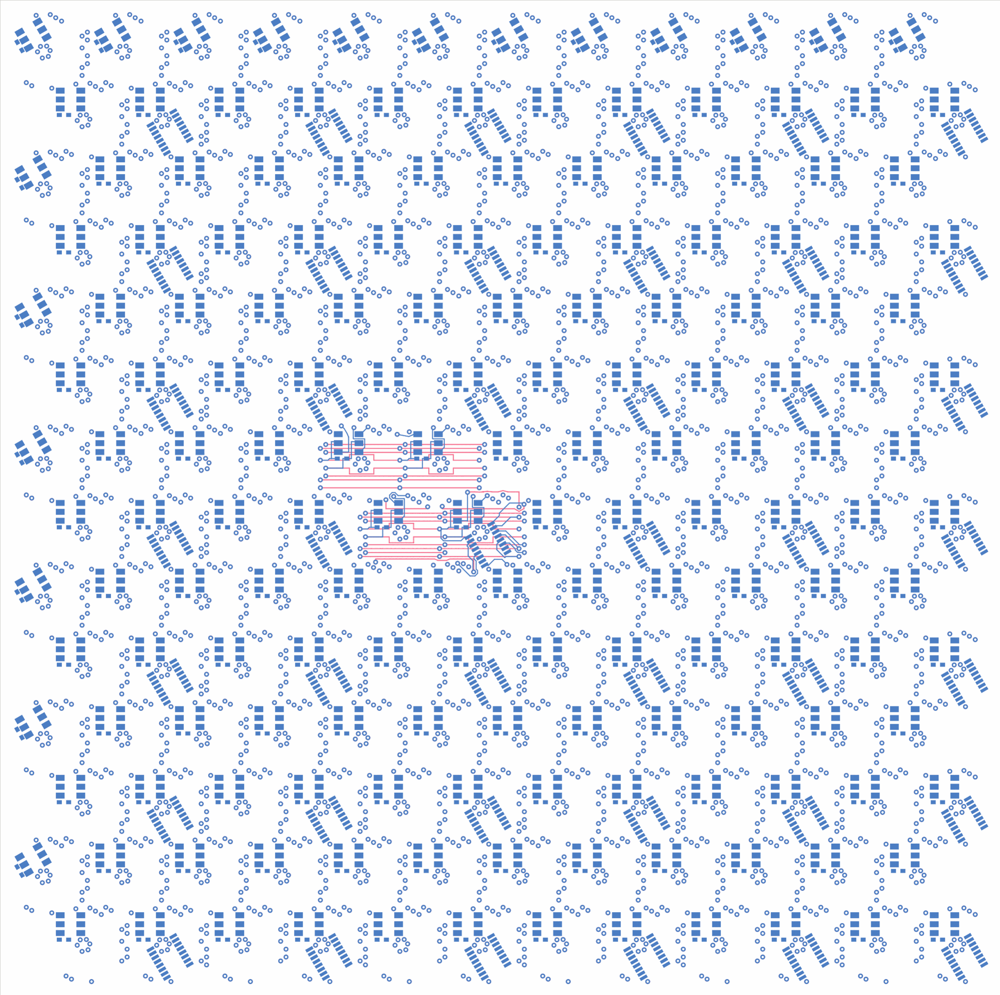
| Quantity | Value | How it is set |
|---|---|---|
| Outline | 106.13 × 105.44 mm | 102 Edge.Cuts segments following the honeycomb cell boundary — self-tiling |
| Copper layers | 14 | F.Cu + In1–In11 winding, In12 + B.Cu electronics |
| Pressed thickness | 1.84 mm | sets the 8:1 via drill floor |
| Coils | 168 | 12 columns × 14 rows, rows offset ±¼ pitch |
| Coil pitch | 8.4667 mm | λ/3, with λ = 25.4 mm = 4 × ¼″ |
| Turns per coil | 144 | 12 per layer × 12 winding layers |
| Trace / space | 0.103 / 0.090 mm | 0.193 mm turn pitch; space is at the fab floor, not equal to the trace |
| Coil resistance | 10.36 Ω | 0.9 A wants 9.3 V — the current limit and the rail are the same number |
| Vias | 3446 | all 0.50 mm land / 0.23 mm drill: 2184 coil (13 per coil), 1259 seam, 3 fabric |
| Parts | 378 | 168 × TC118S (SOT-23-6, C88308), 168 × 100 nF 0402 (C1525), 42 × 74HC595BQ (DHVQFN-16, C730243) |
The platen is 44.45 mm square and every magnet is a catalogue part: 33 bricks of
¼″ × ¼″ × ⅛″ N52 in a 7×7 lattice, nine magnetised through the ⅛″ thickness and
twenty-four through a ¼″ width, the null cells left empty. λ = 25.4 mm because that is
4 × ¼″, so the lattice closes exactly on the platen with no border wasted. Numbers below are
recomputed by route/numbers.mjs from the same physics the simulator runs.
Like every 1 oz honeycomb this design is heat-first, not force-first: 68 A/mm² in the thin copper at hover. The ±16 mm workspace floor of 2.32× is the number that decides whether the stage flies everywhere rather than falling through a corner.
The whole board is one cell repeated, so the cell is where every constraint lands: the winding, the via bay it leaves in its own centre, the gutter it leaves around itself, and the three parts that have to live on the copper's back.
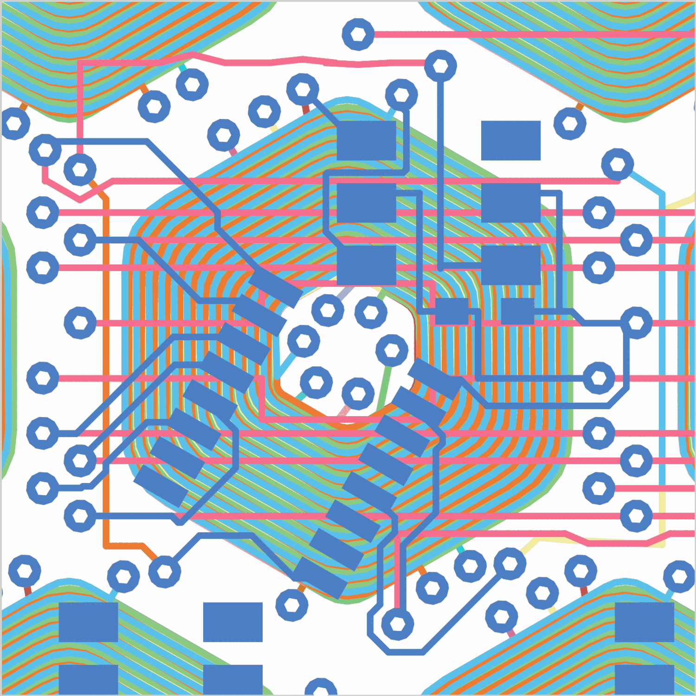
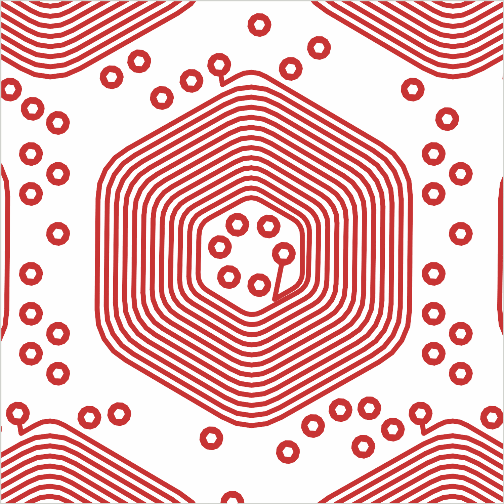
locked: KiCad's
shove router will otherwise spend minutes trying to move 25 000 segments when a drag
brushes one.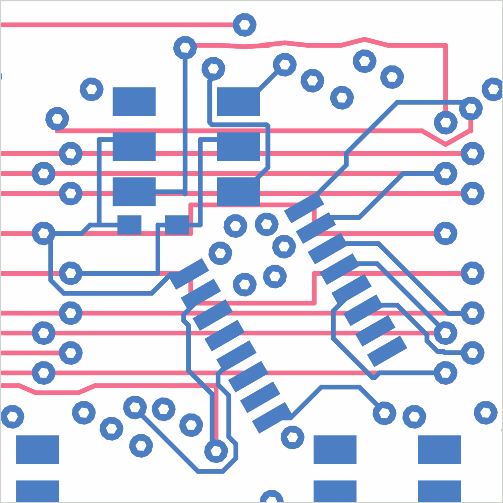
| Cell dimension | Value | Consequence |
|---|---|---|
| Hexagon across flats | 6.773 mm | 80% fill of the 8.467 mm cell |
| Centre hole apothem | 1.071 mm | holds 11 crossover vias on a gated ring and still leaves a legal routing-via site |
| Gutter available to a via | 0.795 mm | a fab-legal via needs 0.79: clearance in, via, edge clearance out |
| Turn pitch | 0.193 mm | 0.103 trace + 0.090 space; equal trace-and-space would cost the bay its room |
| Vias per coil | 13 | 11 crossovers + 2 terminals |
| Fill | 0.80 | 84% leaves only 0.59 mm of gutter — and costs no turns, since turns-per-layer is floor-quantised at 12 either way |
The square-grid presets still wind at 0.94 fill, which leaves 0.24 mm of gutter — not enough for a via any fab will drill. Dropping this board to 0.80 buys the gutter a legal via and costs nothing, because turns-per-layer comes out 12 at either fill.
A plated through-hole can only be drilled where no winding layer has copper. On this board that is the gutter lattice and nothing else — which means that inside a cell, under the parts, B.Cu is the only layer a trace can reach.
That single fact explains every measurement the project has made. Extra electronics layers are worthless because they are all equally unreachable; more router passes do not help; taking the power nets out does not help the signals. Measured on a 3×3 tile, in unrouted connections (lower is better):
| Change | Result |
|---|---|
| 2 electronics layers | 42–44 |
| 4 electronics layers | 44 |
| 6 electronics layers | 44 |
| 30 passes vs 150 passes | identical |
| gutter vias per cell 7 → 4 | 38 → 37 |
| coil fill 0.80 → 0.74 → 0.68 (wider gutter) | 38 → 40 → 38 |
| centre hole enlarged (144 → 108 turns) | 45 → 43 |
| blind vias between the two electronics layers | 38 → 5 |
Only the last line moves it, and it is a fabrication decision rather than a layout one. So the layout answer had to come from somewhere else: stop asking the autorouter to solve the whole board, and make the board periodic instead.
The 168 cells factor into 42 identical 2×2 quads, each with its own 74HC595 driving its four cells' eight bridge inputs. Rows alternate their x-offset by a quarter pitch, so a block spanning an even number of rows is a pure translation of its neighbour two rows up — a 2×2 quad stamps identically everywhere. Route one quad, and in principle the board is that quad 42 times.
The router never sees the real board either. The full 12×14 board is roughly 300 000
track segments of coil spiral, and handed that, freerouting spends all its time re-deriving
that none of it is routable. So the routing problem is written rather than exported:
only the electronics layers exist as signal layers, every coil is one hexagonal
via_keepout (vias may not be drilled into the winding, which is the physical
truth), and every pad is a single-pin component placed at its absolute position with its
rotation baked into a polygon padstack. On the 3×3 tile, that took a router pass from
86 seconds to 2.
freerouting 2.2.4 reports completeness it has not achieved on nets that include
anchor pins: it says "1–2 unrouted" while geometrically leaving 4–7 connections dangling,
and then stops because its own score has converged. KiCad's ratsnest agrees with the
project's geometric checker, not with the router. Every result on this page is verified by
checkses.mjs, which reads copper against a pin map — never by the router's own
count.
If every quad is the same stamp, the stamps have to meet somewhere. They meet at a fixed ladder of nine vias in the shared east–west gutter, and nothing crosses a diagonal seam at all.
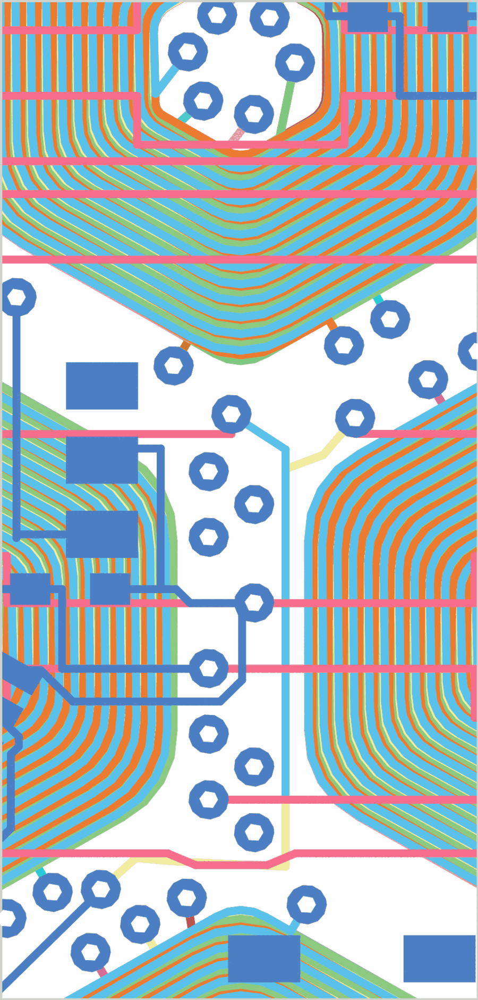
| Signal | x | y | Side |
|---|---|---|---|
| SCL (reserved) | 3.83 | +2.10 | north |
| VLOGIC | 4.40 | +1.68 | north |
| SDA (reserved) | 3.83 | +1.26 | north |
| GND | 4.40 | +0.42 | north |
| VBUS | 3.83 | −0.42 | south |
| SCLK | 3.83 | −1.26 | south |
| RCLK | 4.40 | −1.68 | south |
| DATA | 3.83 | −2.10 | south |
| OE_N | 4.40 | −2.52 | south |
Cell-frame millimetres, origin at the coil centre, y up. Side alignment bought four connections: a signal's seam site must sit on the same side of the cell's east–west corridor as its in-cell taps — register signals south next to the register, power and VLOGIC north near the bridge and decap — or every lane dives across the corridor to reach its tap.
Both columns were shifted 0.12 mm west in the latest revision. The previous ladder split the gutter so evenly that no winding-layer lane could pass it: both hex-side corridors measured 0.51 mm where a 0.1 mm trace needs 0.53. The shift keeps every existing clearance and opens a 0.628 mm corridor east of column B — a dead-straight north–south hug lane, one independent copy per winding layer.
This is the routed board. Four coils, four H-bridges, four decoupling caps and one shift register, wired to each other and to the seam ladder on both sides — 19 of the 24 nets complete, verified geometrically, with the merged board coming back DRC-clean.
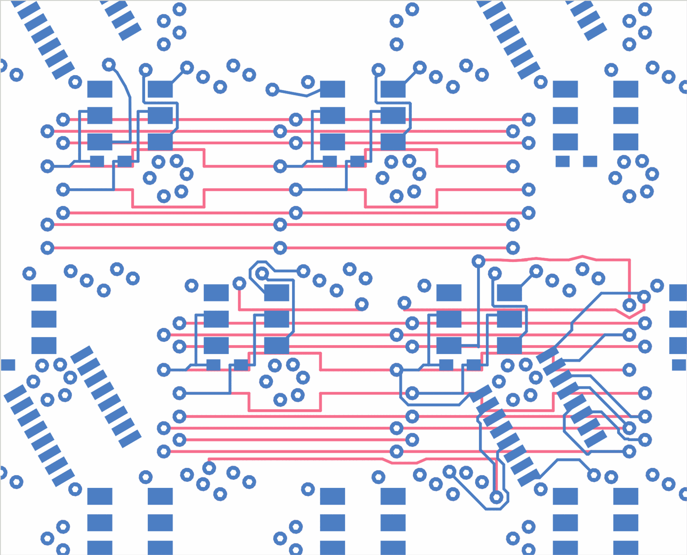
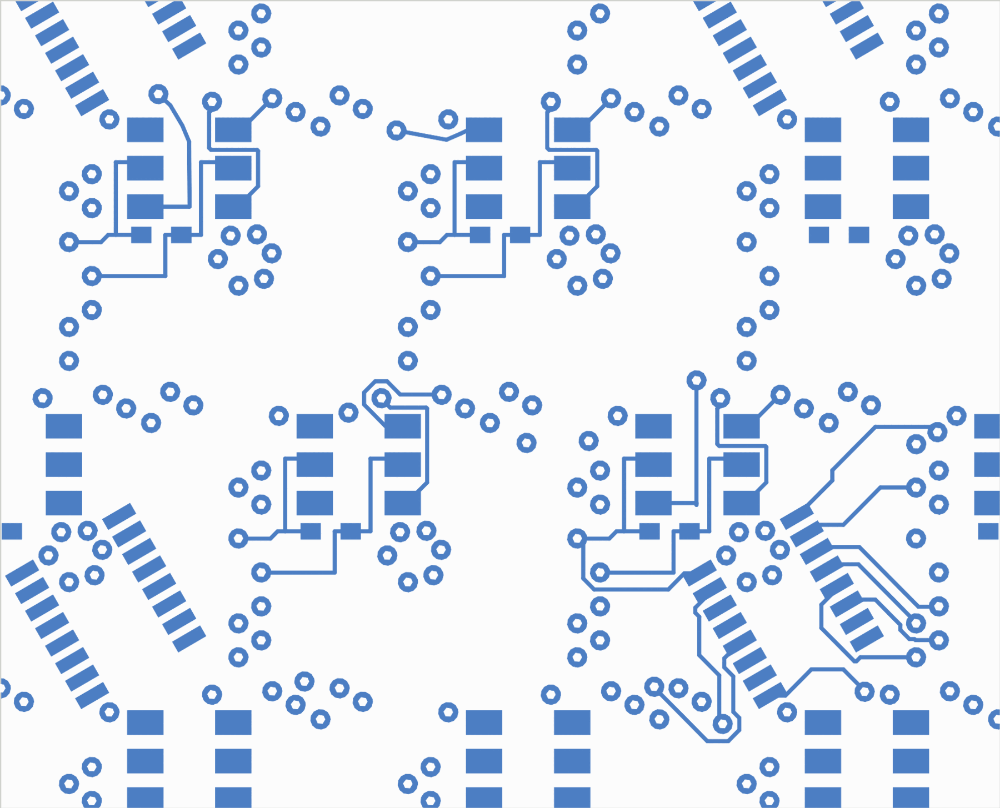
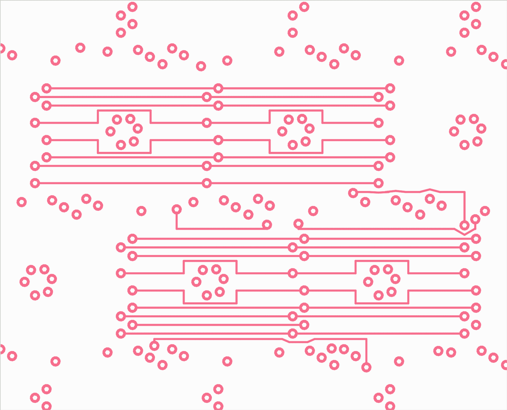
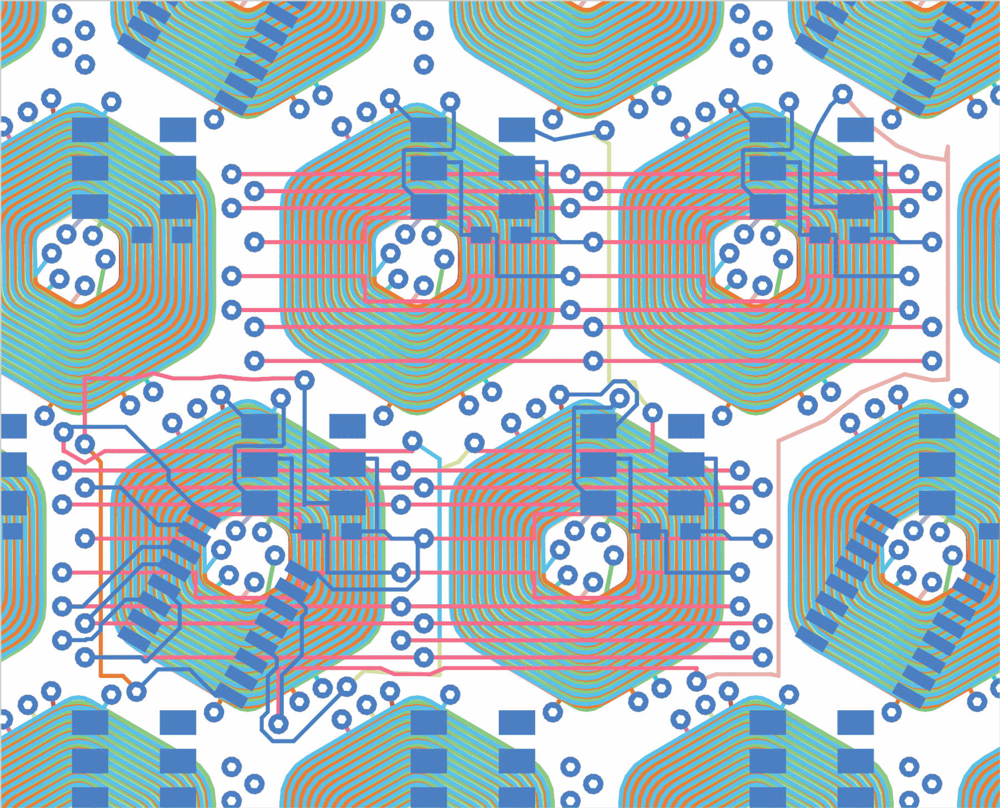
The headline result of the current pipeline is negative about the tool it was built around. In the run that produced this board, freerouting returned an empty session: it took the five nets it was handed, scored 0.00 on pass 1, observed that the board state had not changed, and stopped. Every one of the 268 track segments and 6 vias in the stamp was constructed — closed-form lanes and power combs, and an A* grid router working on a 0.025 mm obstacle grid with committed per-net clearance bands.
That is the expected outcome, not a failure of configuration. freerouting gives up instantly on any net whose corridor is a single thread, and on this geometry most corridors are single threads: a measured 0.11 mm mini-gate here, a one-trace serpentine slot there, seam ladders that are nine-via walls crossable only at specific windows. "Does the router quit in two passes with zero fragments" became the criterion for what has to be constructed instead.
| Copper in the stamp | Segments | Where it came from |
|---|---|---|
| B.Cu | 192 | constructed — register fan, pockets, coil hops, PWM harness |
| In12.Cu | 68 | constructed — bus lanes and power comb trunks |
| In10.Cu | 5 | constructed — winding-layer fabric (PWMB_78) |
| In11.Cu | 3 | constructed — winding-layer fabric (DATA_E) |
| freerouting | 0 | empty network_out; 5 nets offered, 5 returned unrouted |
The two rows on In10 and In11 are the newest idea and the one with the most headroom left. A winding layer is not a routing resource inside a coil, but the gutter on a winding layer is empty copper that nothing else wants — the hug lane east of the seam ladder runs the entire seam, one independent copy per winding layer, and a through-drill is the only thing that cares. Six winding layers now carry fabric — the two 78-PWMs on the west hug lanes, DATA_E on the internal one, and the 90/91 nets ride a staircase: row-1 hug up, an In12 jog across the half-pitch row stagger, the row-2 hug on to the empty row-2/3 gutter, and a short tail onto the pad from the north.
Twenty-four nets make up the stamp's job. The count below is
checkses.mjs's: it reads the session's copper against a pin map and asks
whether the pins are actually joined, which is the only number this project accepts.
| Net | Job | Verdict |
|---|---|---|
| coil_78_A/B · coil_79_A/B coil_90_A/B · coil_91_A/B | each coil's two terminal vias to its bridge's two outputs | 8 / 8 |
| GND_C | power comb: the seam barrels to every bridge and decap in the quad | complete |
| SCLK_C · RCLK_C · OE_N_C VLOGIC_C · DATA_W · DATA_E | the register's control and chain nets to their seam sites | 6 / 6 |
| PWMB_78 · PWMA_90 · PWMB_91 | register output to bridge input | 3 / 8 |
| PWMA_78 · PWMA_79 · PWMB_79 PWMB_90 · PWMA_91 | register output to bridge input | missing |
| VLOGIC_CE | register pad 16 to the internal-seam VLOGIC barrel | missing |
VBUS's comb is constructed too, and its 44 segments are in the board; it is not one of the 24 because it has no routed job left to check. All six remaining misses are register-pocket escapes, and under periodicity the router completes none of them — with the eight neighbouring stamps' copper as keepouts, freerouting scores 0.00 and stops on the first pass, so anything not constructed stays unrouted. Each of the six has now been measured to a dead end at this register placement: the pocket's west face, the band-NN channel mouths and the seam-junction zones sit exactly one lattice period apart, so any one net's copper in one of them is a forbidden image in the others. The trajectory across the pipeline's history, each point a full regenerate-construct-route-merge-DRC cycle, was 9 → 8 → 7 → 5 missing on the non-tiling stamp — and this stamp holds 6 while also tiling, with the merged board's DRC exactly equal to the bare board's every time.
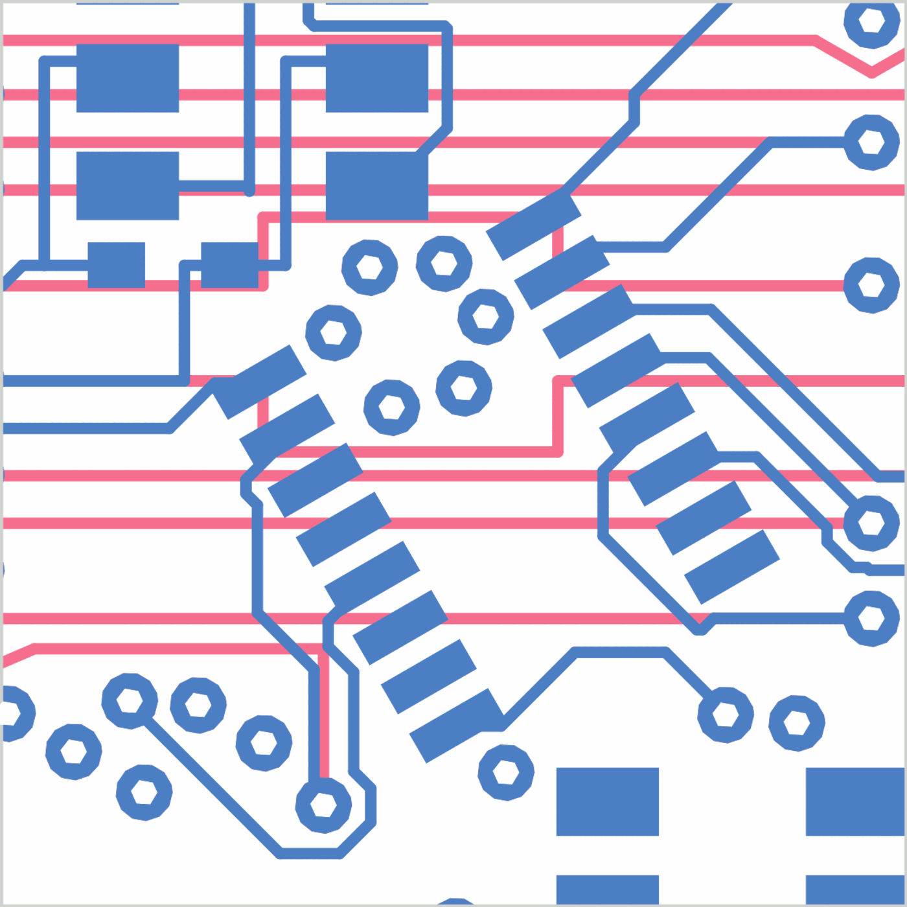
All fourteen copper layers over the stamp, viewed from the bottom — B.Cu first, F.Cu last, the order a drill would meet them coming up from the electronics side.
The .kicad_dru beside the board is generated from the same
FAB object the geometry is sized from, so the thing being checked and the thing
being drawn cannot drift.
| Rule | Value | Source |
|---|---|---|
| min track width | 0.09 mm | JLCPCB 1 oz multilayer |
| min copper clearance | 0.09 mm | JLCPCB 1 oz multilayer |
| min via drill | 0.23 mm | aspect ratio: 1.84 mm ÷ 8, not the bare 0.15 mm floor |
| min via diameter | 0.49 mm | drill + 2 × annular ring |
| min annular ring | 0.13 mm | JLCPCB support answer 110 |
| via hole to hole | 0.20 mm | JLCPCB |
| copper to board edge | 0.20 mm | routed edges |
| hole to copper | 0.20 mm | inner-layer via hole to copper |
Aspect ratio is the only fab limit that depends on the stack rather than on the copper, and KiCad has no constraint for it. So the rule file states the drill floor the ratio implies instead — because a ratio the rule file cannot express is a ratio nothing checks. That silence is exactly how a 14-layer board once shipped 698 routed vias at 9.2:1 with DRC reporting zero errors: every rule was a diameter.
DRC on the board above says the copper is legal where it sits. That is a different question from whether forty-two copies of it collide — and until this week nobody had asked the second one. The answer was no.
The quad lattice is two pure translations: one quad east
(2 cells, 16.933 mm) and one band north (2 rows, 14.665 mm, which is exactly where
the ±¼-pitch row stagger cancels). So a neighbour's copper is this copper shifted, under a
different net wherever the name carries a cell index — PWMA_79 two columns over
is PWMA_81, and two of those touching is a short. The global bus does not
change, and there the neighbour's copper really is this copper and may touch.
tilecheck.mjs checks the stamp against all eight shifted copies of itself on
that rule.
50 pairwise conflicts, 12 distinct, every one of them at distance 0 — real
crossings, not near misses — and every one traceable to three constructed PWM paths:
PWMA_79, PWMA_90 and PWMB_79. PWMA_90
alone spans 14.675 mm north to south against a 14.665 mm band period, so it meets
itself one quad up. That is why cloning it produced 1356+ DRC violations, 687 of
them in the board's interior — more than a cell pitch from any edge, where the only thing
copper can collide with is another stamp.
The obstacle grid now carries the eight lattice images of every committed path, skipping
images that land on the net being routed. A path can also collide with its own image, and
those are not knowable before the path exists — so routeNet finds one, blocks
what it hits, and looks again, up to five times. The routed stage gets the same images as
keepouts (PERIODIC_KEEPOUTS=1), clipped to a cell and a half around the quad
because unclipped they grow freerouting's working area rather than its obstacle set and
pass 1 never finishes.
With the images off, the construction is byte-identical to the old one — the change is inert until it bites.
| old 19/24 stamp | this stamp | |
|---|---|---|
| nets complete (of 24) | 19 | 18 |
| constructed nets | 19 | 18 |
| copper in the stamp | 268 seg + 6 vias | 284 seg + 13 vias |
| DRC on the merged board | 0 | 0 |
| tilecheck conflicts | 12 | 0 |
| DRC after cloning to 42 quads | 1356+ | 669 |
| …of those, in the interior | 687 | 0 |
The two nets that first paid the price, PWMA_90 and PWMB_90,
were won back the long way round: their old treks used the neighbouring stamp's space, so
they now ride the winding-layer fabric NORTH instead — through the inter-row band, across
the half-pitch row stagger, and down from the empty row-2/3 gutter into the bridge pads.
PWMB_91 joined them with a vialess In7 run the whole way. What remains missing
is exactly the set for which every corridor has been measured shut: the register pocket's
west face, the channel mouths and the seam-junction zones sit one lattice period apart, so
one net's copper there is another's forbidden image — three nets' worth of geometry cannot
share a periodic column.
669 violations remain and every one of them sits at the board's rim. Not one lies
in the interior. They are the copper quadclone trims against the outline
(416 items), which leaves half-teeth and dangling stubs where there is no neighbour to
meet; the whole tracks_crossing class, 366 violations of stamps colliding with
stamps, is gone. Closing the rim is the margin-spine work, not stamp work.
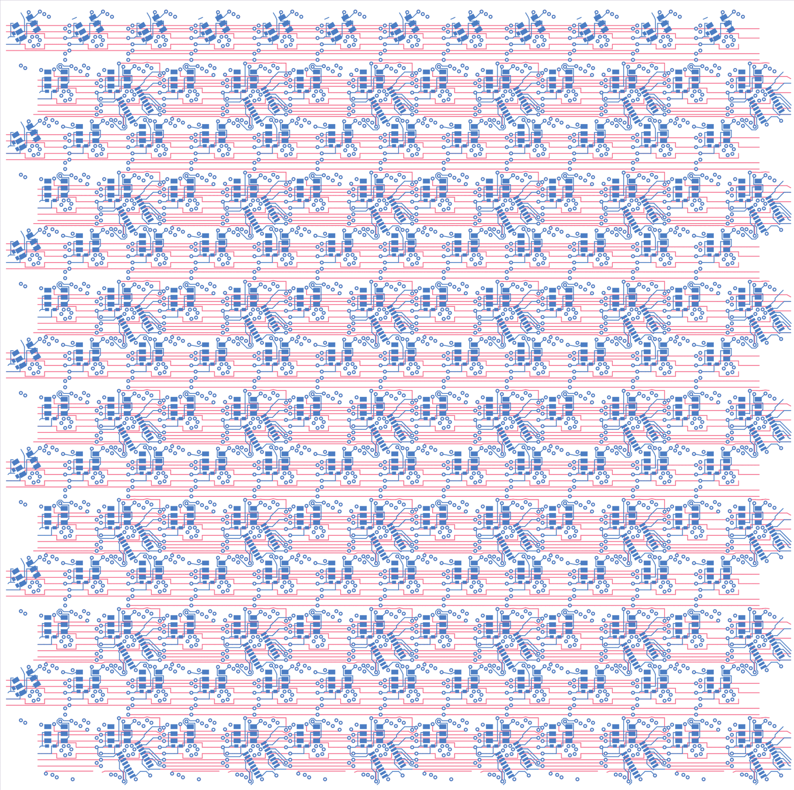
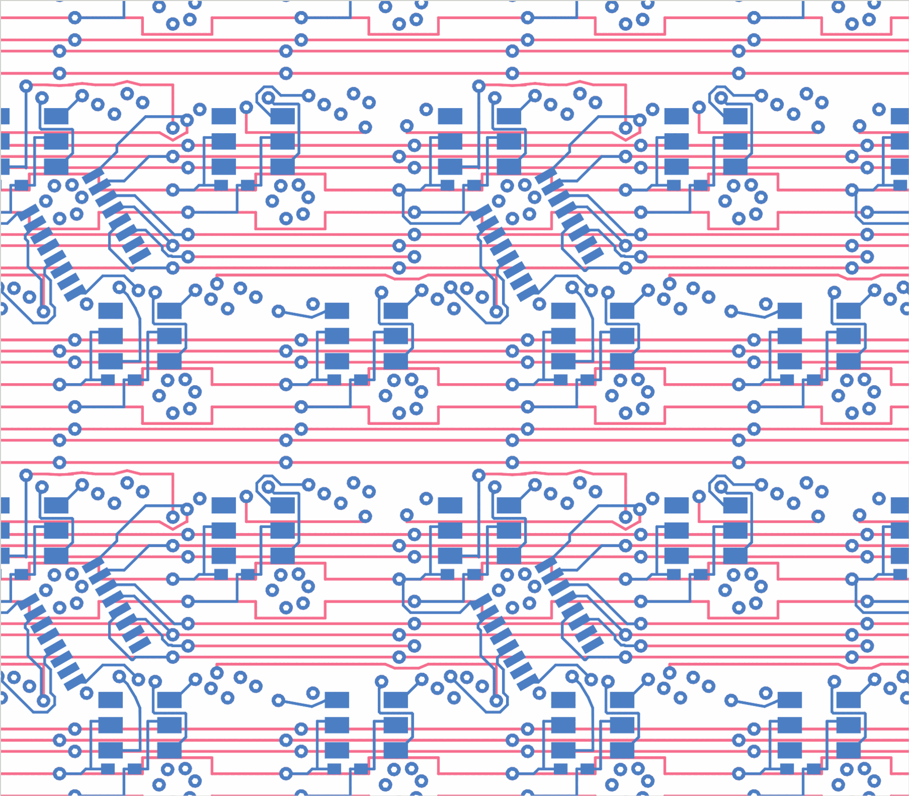
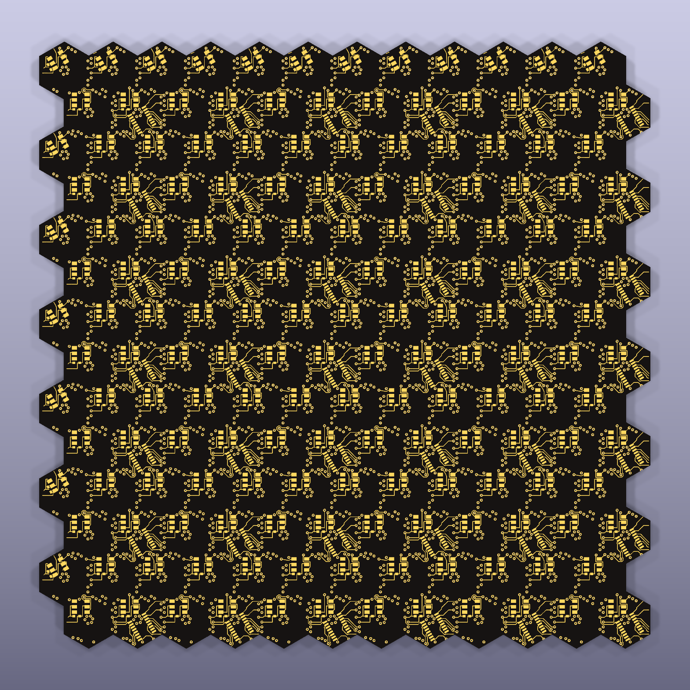
KiCad DRC against the generated JLCPCB rules: 0 errors, identical to the same
board before the routing was merged. coilcheck.mjs green: no winding
self-intersections, no via barrel welded to its own turns, no touching via lands — the three
short classes that no design-rule check can report, because both halves of each
short are the coil's own net. The stamp's connectivity is 18/24 by geometric check, the
board's ratsnest falls from 2885 to 2819 connections when the stamp is merged — and
tilecheck reports zero conflicts against all eight neighbouring
copies of the stamp: for the first time the routed stamp and the tiling stamp are the same
board.
One quad is routed. The other 41 are placed, drilled and waiting. Nothing on this page claims otherwise, and the full-board render above is the honest picture.
Cloning the stamp onto all 42 quads leaves 669 DRC violations, none of them
interior — all at the rim, where quadclone trims copper against the
outline. What is still missing before this is a board: the six unrouted connections per
quad, the west/east margin spines, the band-to-band DATA links, and a rim that ends its
copper properly instead of having it cut off. See §08.
KiCad's DRC report caps each check. The unconnected list stops at 499 items and
the clearance list at 499 violations, so those numbers are floors, not counts. The bare board
and the routed board both "report 499 unconnected" while genuinely differing by 67
connections. The true ratsnest count comes from the board's own connectivity graph via
pcbnew, which is what summarise.py prints.
The remaining warnings are the expected kind and are also capped: dangling seam vias with no copper on them yet, silkscreen over copper, and this machine's unconfigured footprint library. None is a property of the copper.
On an earlier revision of this board — before the periodic stamp existed — the whole 168-cell problem was handed to freerouting as one job. It grinds down to 563 unrouted connections from 1799 — and has to be watched, because it does not converge the way a small tile does. Over eleven passes it went 1245, 1193, 1125, 1073, 1002, 933, 877, 835, 778, 771, 710: a tenth pass gaining 7 followed by an eleventh gaining 61. A single slow pass on this board is not convergence. That run also handed back 17 segments belonging to two nets at once — a dead short if merged as given — which is why the merge step refuses shared copper and drops the net with less routing back to the ratsnest, where it is visible.
Every artefact on this page is regenerated from the board file, and the board file is regenerated from the preset. Nothing here is hand-placed.
# the stamp pipeline: generate, validate, construct, route, union, merge, DRC # FABRIC_LAYERS names the winding layers the fabric may use, in FAB_A/B/C order cd route # the stamp: 18/24 constructed, DRC-clean, tiles clean (six fabric layers) OUT_KEY=fabtile2 SKIP_GEN=1 SR_SWEEP=1 SR_CONSTRUCT=1 PERIODIC_KEEPOUTS=1 MP_R2=20 \ FABRIC_LAYERS=In11.Cu,In10.Cu,In9.Cu,In8.Cu,In7.Cu,In6.Cu ./qlane.sh node quadclone.mjs fabtile2 fabtile2.union.ses # -> fabtile2.full.kicad_pcb # the page and every render in it ./report.sh fabtile2.merged.kicad_pcb python3 ../serve.py 8010 # then http://localhost:8010/route/report/
| Tool | Does |
|---|---|
| quadgen.mjs | builds the full 12×14 board with 42 identical quads, seam vias and pinned part placements |
| coilcheck.mjs | hard gate: refuses any board whose windings self-intersect or weld to a via |
| lanegen.mjs | constructs the lanes, power combs, coil hops and PWM harness; verifies every segment numerically before emitting |
| quadroute.mjs | writes the routing problem — electronics layers only, coils as via keepouts, constructed copper as keepouts |
| tilecheck.mjs | the tiling gate: the stamp against eight shifted copies of itself, net-aware |
| checkses.mjs | the verdict: geometric connectivity against a pin map, never the router's own count |
| mkses.mjs | merges a session onto the real 14-layer board and refuses copper the router gave to two nets |
| report.sh | this page's renders, plus facts.json, numbers.json, summary.txt |